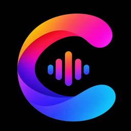

ConvxyA music player that stays out of the way.
Convxy streams the YouTube Music catalogue and plain YouTube, keeps your library and downloads on the device, and puts Apple Music-style synced lyrics — including per-singer lines for duets — over a UI built on real backdrop blur rather than stock Material widgets. There is nothing to sign up for, and no ads or analytics; the YouTube side can use your own account if you want your subscriptions there, but the app works without one.
Kotlin · Jetpack Compose · Media3 Android 8.0+ GPL-3.0 v1.8.0
Download the APK Source on GitHub Nightly builds
What it is
Convxy is a fork of Convx,
which is itself a fork of vivi-music. The
playback core is a Media3 ExoPlayer service; streaming goes through an
unofficial InnerTube
client kept in its own module, with several native YouTube clients probed in parallel so a
song still starts when one of them gets flagged.
The interface is the part the fork is really about. Liquid Glass surfaces sample the actual pixels behind them and blur and refract them, so the nav bar, sheets, menus and every switch, slider and button sit in the same light as the artwork behind them. It is not a translucent colour painted on top.
What it does
- Streaming and library
- YouTube Music, JioSaavn and local files in one library, with playlists, subscriptions, search, background playback and lock-screen controls. Downloads are cached on device, and Settings → Storage breaks downloads, the song cache and the image cache out separately, each with its own clear button.
- Liquid Glass UI
- A shared backdrop layer feeds the nav bar, mini player, sheets, dialogs and long-press menus; switches, sliders, buttons, pills and the player's own controls each sample and refract it — the menu over the player bends the album art through its body. Per-element blur, vibrancy, lens depth and refraction are adjustable in Settings, along with iOS-style rubber-band overscroll and spring transitions. Dynamic colour comes from the current artwork. How the engine records, samples and shades.
- Synced lyrics, including who is singing
- Word-by-word karaoke fill, and Apple Music-style multi-singer lines: every vocalist gets a colour and a name badge, shared vocals are handled as a chorus rather than assigned to the lead. How the TTML agent data is parsed.
- Ambient Mode
- A full-screen landscape view for the TV or the desk stand: artwork on one side, lyrics on the other, an accent glow or the track's own animated canvas behind them, and a progress ring you can scrub from the edge of the screen. Portrait canvases (3:4, 9:16) can be kept at their full size in a side panel with the gradient weighted toward them instead of being cropped to cover. Settings and how the canvas is fitted.
- Native YouTube
- Home feed, search with suggestions and filters, channels, playlists and Shorts rendered in the app — no WebView — plus a watch screen with immersive fullscreen, double-tap seek, speed and a quality cap up to 1080p. Related videos become the queue, so they share the mini player and notification with your music. How video playback resolves a stream.
- Sound
- Built-in equalizer, optional high-bitrate and lossless sources where the provider has them, crossfade with tempo-matched Auto-DJ mixing, and a waveform scrub bar in the mini player. The mix planner decides per transition whether the two tracks are close enough in tempo to stretch, and backs off to a plain crossfade when they are not.
- Together, and where that reaches
- Listen Together opens a room that several phones follow at once; the room lives on a small
WebSocket server (
listen-together-server/in the repo) and the app lets you point at your own deployment. Discord Rich Presence, Last.fm, ListenBrainz and Spotify scrobbling are each off until you turn them on and connect your own account. - Everything else it is expected to do
- Android Auto, a tablet sidebar layout, material icon and font choices, an in-app updater that reads GitHub Releases, and zero telemetry — the library, settings and caches never leave the phone.
Screens


Installing
Download the APK from
the latest release and install
it. Android will ask you to allow installs from this source once; that is the normal sideload
prompt. The release asset is a single signed universal APK built as universalGms, so
Google Cast is compiled in; it runs on Android 8.0 and newer and needs no Google account. Android
Auto works in either flavour. If you would rather have a build with no Play Services dependency at
all, the universalFoss variant is there in the Gradle project — build it from source,
because the release page does not carry it.
If you meant to listen in the car and Convxy is missing from Android Auto, enable Settings → Android Auto → Developer settings → Unknown sources in the Android Auto phone app, then restart it. The same setting is needed by most third-party Auto media apps.
Streaming goes through unofficial APIs. YouTube can and does change them, so expect a release or two to break playback until it is patched — which is also why the project publishes CI builds next to the tagged releases.
Building
JDK 21 and a current Android Studio are enough. Open the project, let Gradle sync, run the
app module; ./gradlew :app:assembleUniversalFossDebug works from the CLI
too. CONTRIBUTING.md
covers the module layout, branch and commit conventions, and what a pull request should contain.
Community
Discord is where release news, lyric-provider quirks and Listen Together sessions happen. Bugs and feature requests go to issues; the discussions board is for anything that is not yet either.